My Profile
About me
Surabaya
Beautiful town where I was born and live
Local Foods
Traditional food from Surabaya
Tourist Places
Popular Places to visit in Surabaya
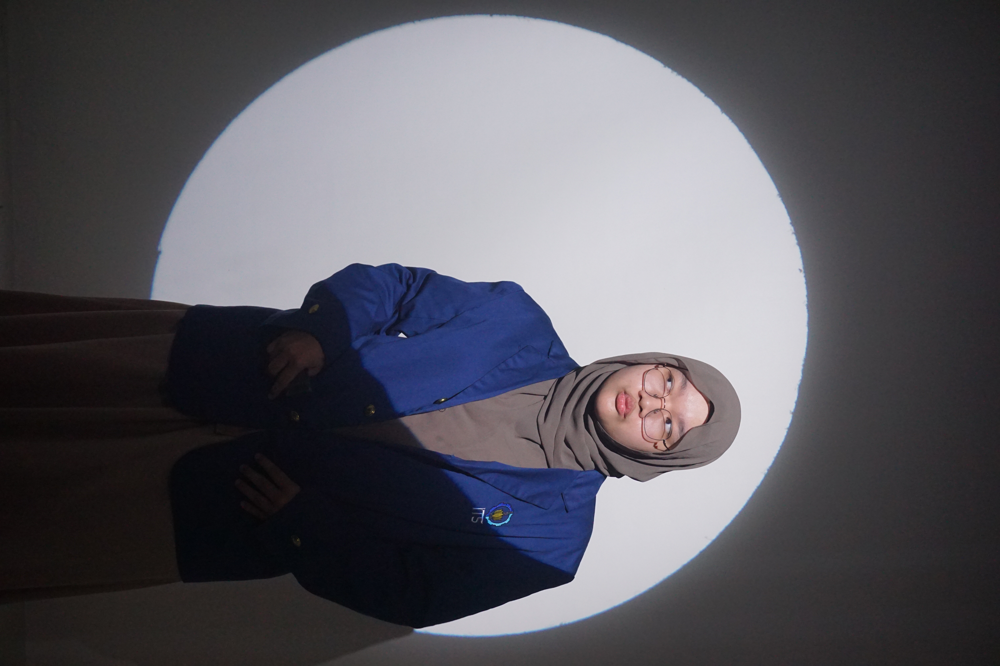
Rafifah Rahmah Admayana
5025251208 - Informatics Engineering
An undergraduate student in Informatics Engineering at the Institut Teknologi Sepuluh Nopember (ITS). I am passionate about continuous learning and enjoy participating in activities beyond academics. During high school, I was actively involved in the logistics division and served on organizing committees for various school events, where I developed strong teamwork, organizational, and communication skills. I am enthusiastic about gaining new experiences and growing both personally and professionally.
Surabaya as my hometown
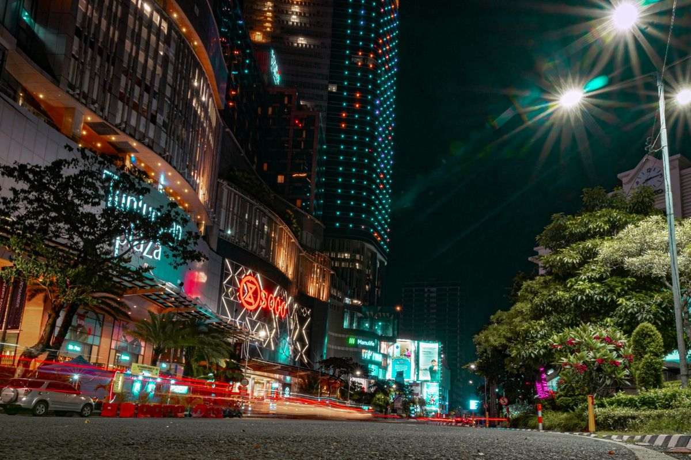
About This Town
Surabaya is a major city in Indonesia and the capital of East Java province. It is located on the northeastern coast of Java and is Indonesia’s second-largest city after Jakarta.
Surabaya is an important commercial, industrial, and port city, with the Port of Tanjung Perak serving as a major shipping hub. It is also historically significant in Indonesia’s independence movement, particularly because of the Battle of Surabaya on November 10, 1945. This history earned it the nickname “City of Heroes” (Kota Pahlawan).
The name Surabaya is popularly associated with sura (shark) and baya (crocodile), which is why a shark and crocodile appear prominently in the city's symbols.
Local Foods
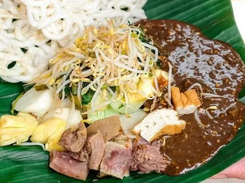
Rujak Cingur
Rujak cingur is a traditional dish from Surabaya, East Java, Indonesia, made from a mixture of fruits, vegetables, tofu, tempeh, and lontong, served with a thick, savory, slightly sweet and spicy sauce made mainly from petis (fermented shrimp paste) and peanuts. Its most distinctive ingredient is cingur, which means cow’s snout, giving the dish its unique name and chewy texture. It is one of Surabaya’s most famous traditional foods.

Semanggi Suroboyo
Semanggi Suroboyo is a traditional dish from Surabaya, Indonesia, made mainly from semanggi leaves (water clover), which are steamed and served with boiled vegetables such as bean sprouts and sweet potatoes. It is topped with a thick, sweet and savory sauce made from pounded peanuts, sweet potato, and fermented soybean paste, then usually eaten with krupuk puli (rice crackers). Semanggi Suroboyo is considered one of Surabaya’s unique traditional foods and is especially known for its distinctive sweet, savory flavor and soft vegetable texture.
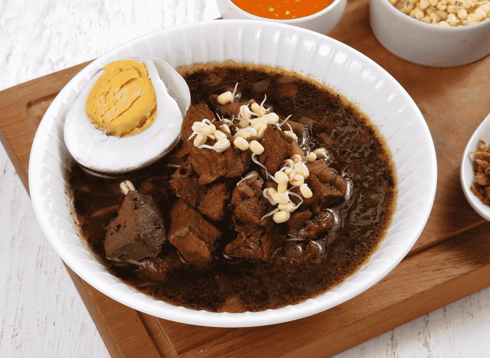
Rawon
Rawon is a rich, dark beef soup native to Surabaya and East Java. Its distinctive black color comes from the use of kluwek nuts, which also give the soup a deep, nutty, and savory flavor. It is typically served with warm rice, bean sprouts, salted egg, and shrimp crackers, making it a hearty and comforting local favorite.
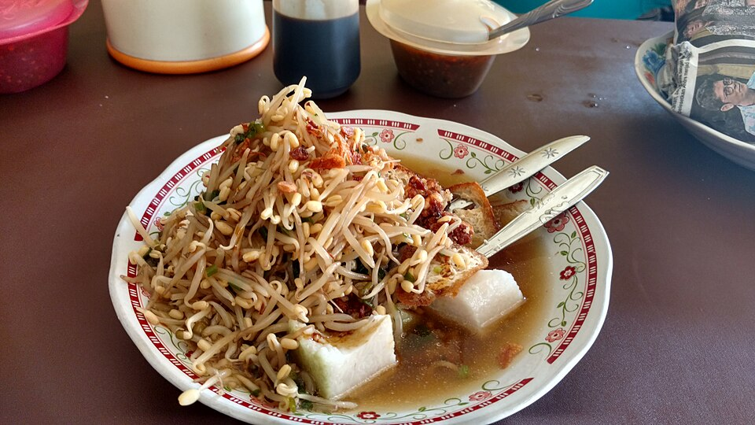
Lontong Balap
Lontong Balap is a famous street food from Surabaya consisting of rice cakes (lontong), fried tofu, lentho (fried cassava and bean patties), and a generous amount of bean sprouts. It is drenched in a clear, savory broth and usually eaten with a side of spicy prawn paste sambal and seashell (sate kerang).
Tourist Places
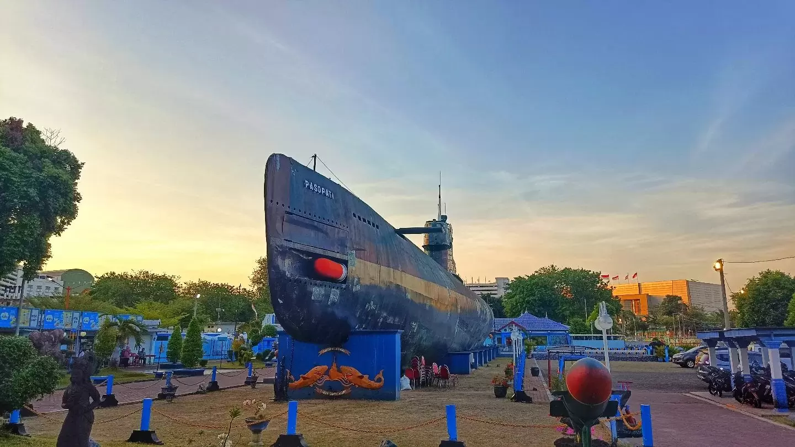
Monumen Kapal Selam Surabaya
Monumen Kapal Selam, or Monkasel, is a historical landmark and museum in Surabaya, Indonesia, featuring a real KRI Pasopati 410, a Soviet-made Whiskey-class submarine that served in the Indonesian Navy from 1962 to 1990. Visitors can enter the submarine and explore its narrow interior, including the crew quarters, control room, and torpedo area, while learning about Indonesia’s naval history. Located near the Kalimas River in central Surabaya, Monkasel is one of the city’s popular tourist attractions and a unique place to experience what life was like aboard a military submarine.
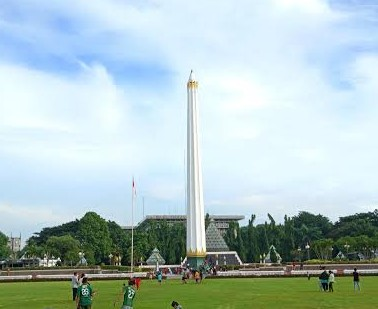
Monumen Tugu Pahlawan
Tugu Pahlawan, or Heroes Monument, is a famous landmark in Surabaya that commemorates the heroes of the Battle of Surabaya on November 10, 1945. The monument is about 41 meters tall and is a symbol of Surabaya as the “City of Heroes.” The area also has a museum where visitors can learn more about the history of the battle and Indonesia’s struggle for independence.
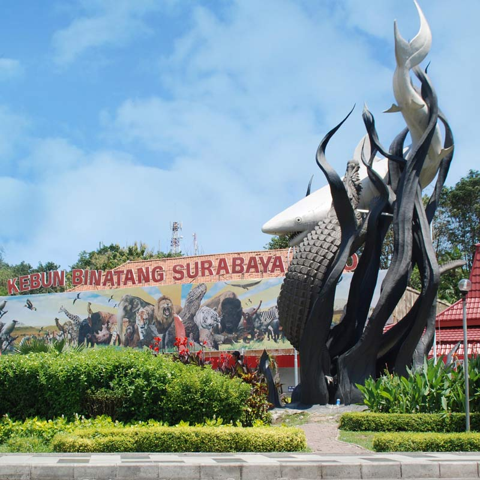
Kebun Binatang Surabaya (KBS)
Surabaya Zoo, known locally as KBS, is one of the oldest and most famous zoos in Southeast Asia. Located in the southern part of the city, it features a wide variety of animals, including the iconic Komodo dragon. Right in front of the zoo, you can also find the famous Sura (shark) and Baya (crocodile) statue, which is the official symbol of Surabaya.
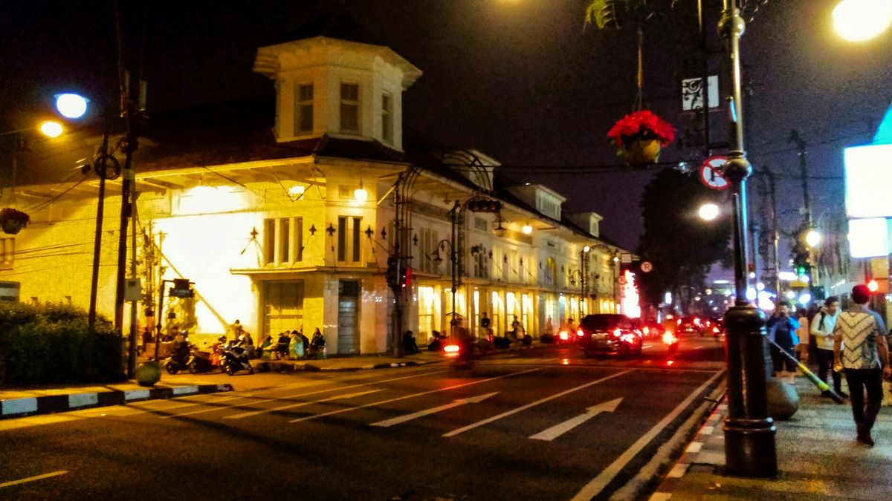
Kota Lama
Kota Lama Surabaya is a historic area in Surabaya, East Java, known for its old colonial-era buildings and streets that reflect the city’s history. The area has been revitalized into a tourist destination with heritage buildings, cafes, and public spaces, making it a popular place to explore Surabaya’s past while enjoying its modern atmosphere.
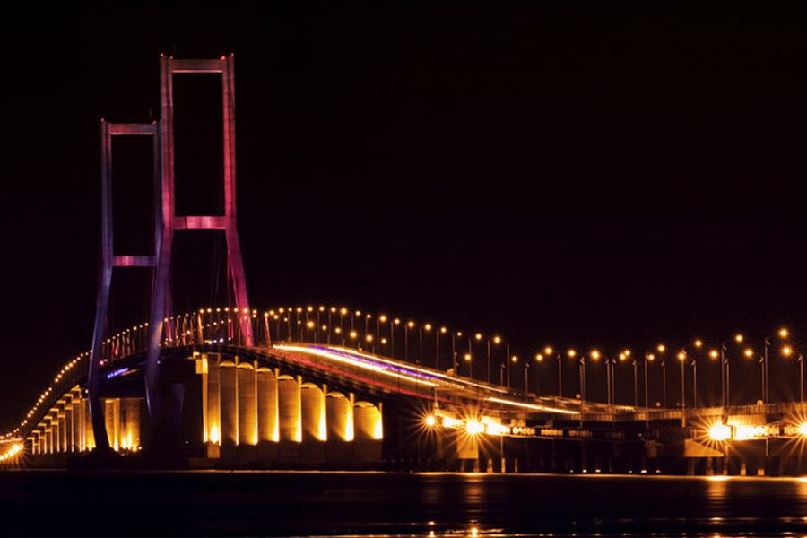
Jembatan Suramadu
The Suramadu National Bridge is the longest bridge in Indonesia, connecting the city of Surabaya on the island of Java to the neighboring island of Madura. Spanning 5.4 kilometers across the Madura Strait, it is an architectural marvel and a popular spot for sightseeing, especially at night when the bridge is beautifully illuminated.
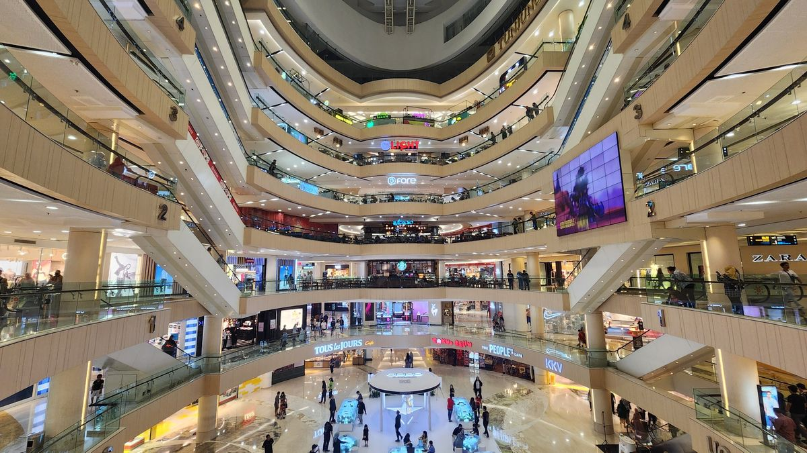
Tunjungan Plaza
As the second-largest city in Indonesia, Surabaya is famous for its massive shopping centers, and Tunjungan Plaza is the most iconic of them all. Located in the central business district, this supermall is divided into six interconnected sections, offering endless shopping, dining, and entertainment options for visitors and locals alike.